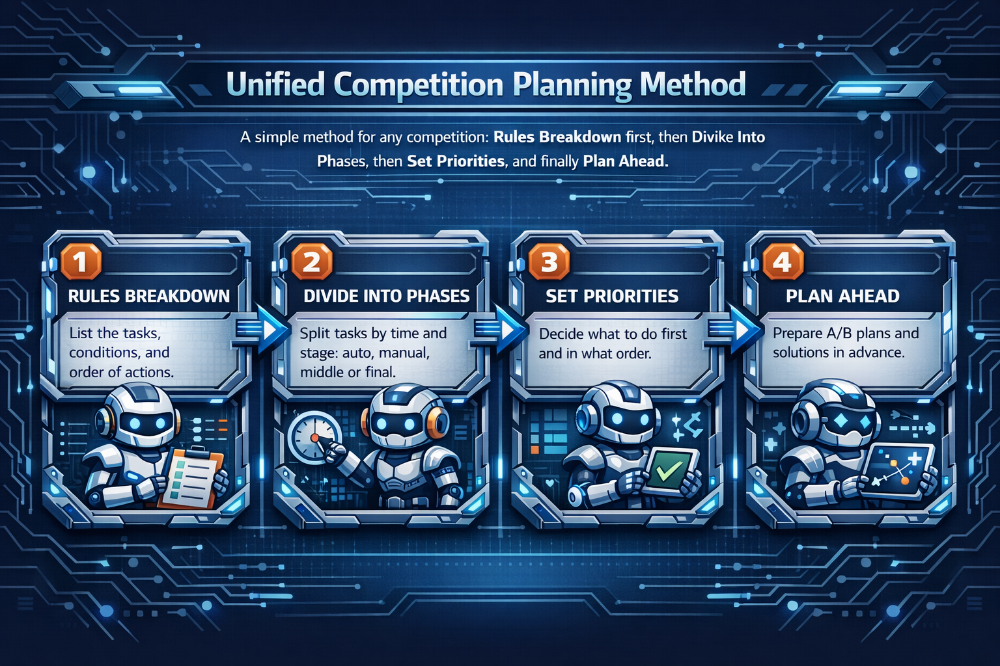

拆规则
明确得分项、约束条件、任务顺序和关键失分风险。
把前面的设计方法和参数判断，转化成赛项级规则拆解与策略规划
这一页不只是不同赛项的入口，而是说明同一套规划方法如何适配 Inspire、Starter、Explorer、Challenge。先讲统一方法，再进入具体赛项，观众会更容易理解。
不管是哪一个赛项，比赛规划都可以按同一套方法展开：先拆规则，再分阶段，再排优先级，最后准备 A/B 策略。

明确得分项、约束条件、任务顺序和关键失分风险。
按比赛时间和任务节奏切分自动、手动、中后段或终局阶段。
判断哪些任务先做、哪些任务稳做、哪些任务只在条件允许时做。
准备 A/B 策略和失误补救方案，让比赛不依赖单一路径。
赛项选择
点击对应赛项卡片即可进入子页面。每个赛项页都可以继续补充规则重点、策略节奏和讲解用图。